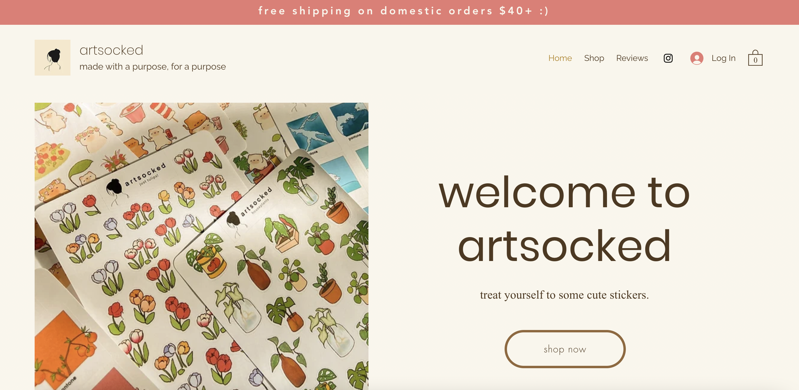
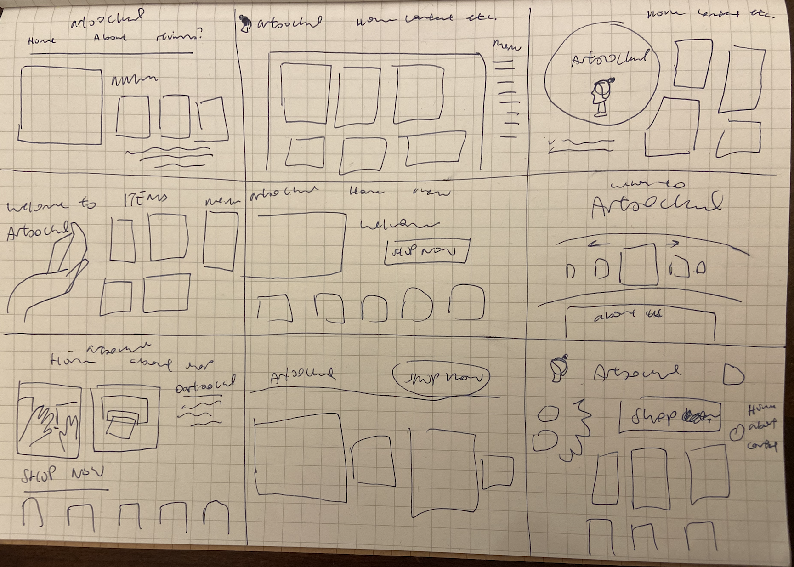
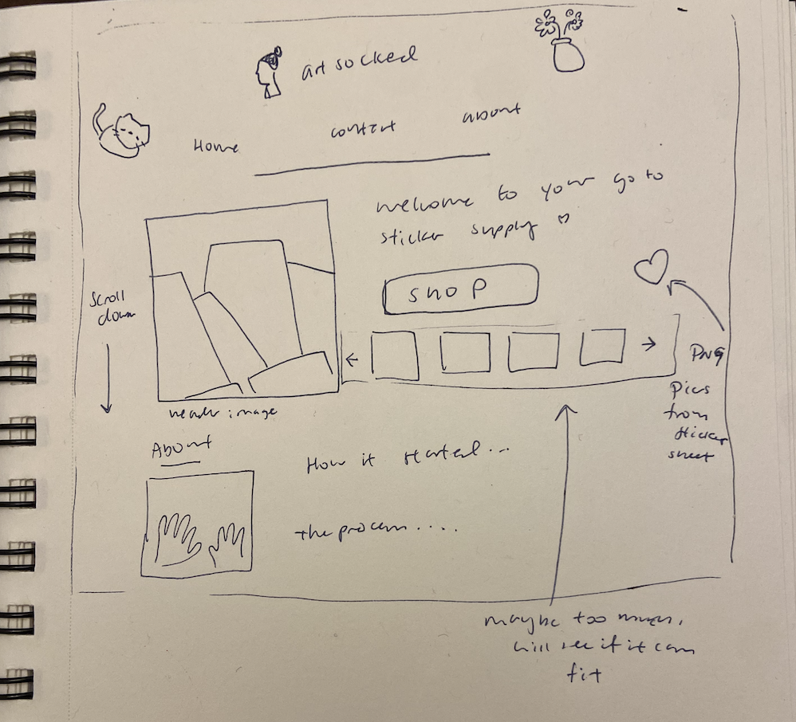
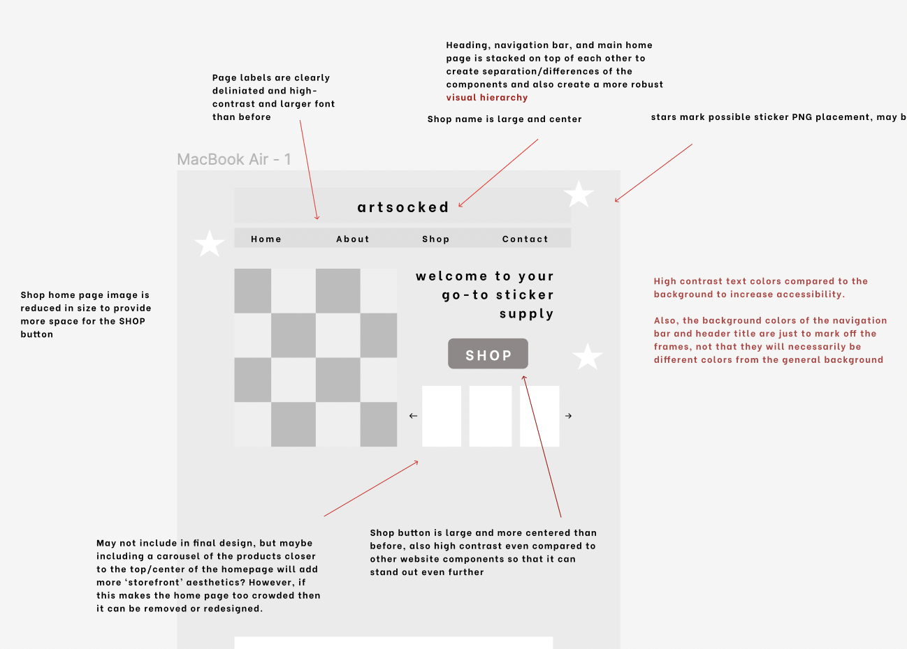
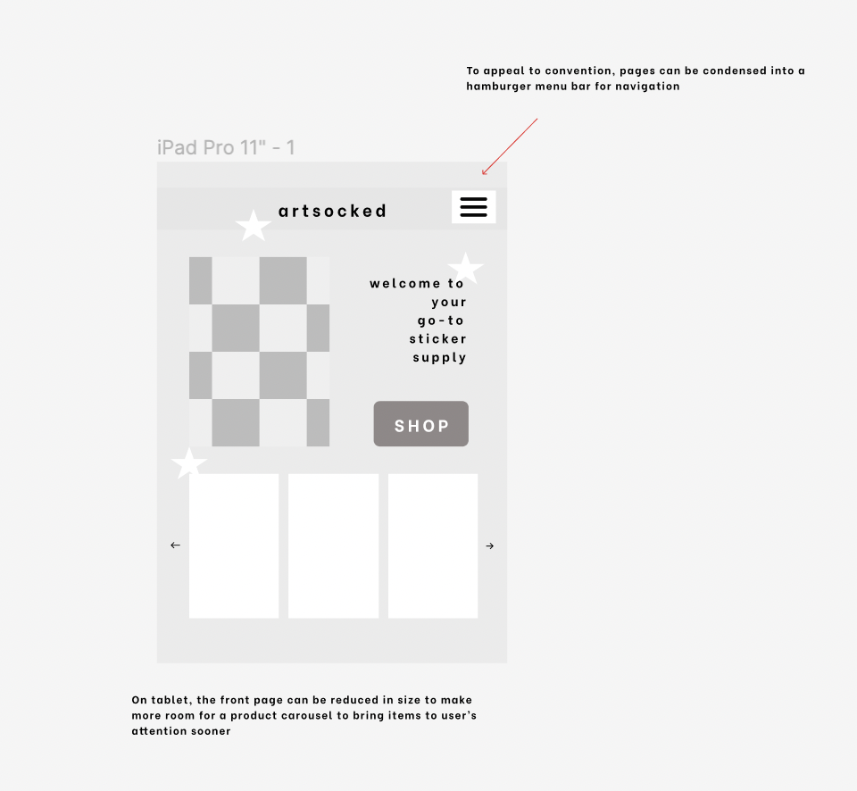
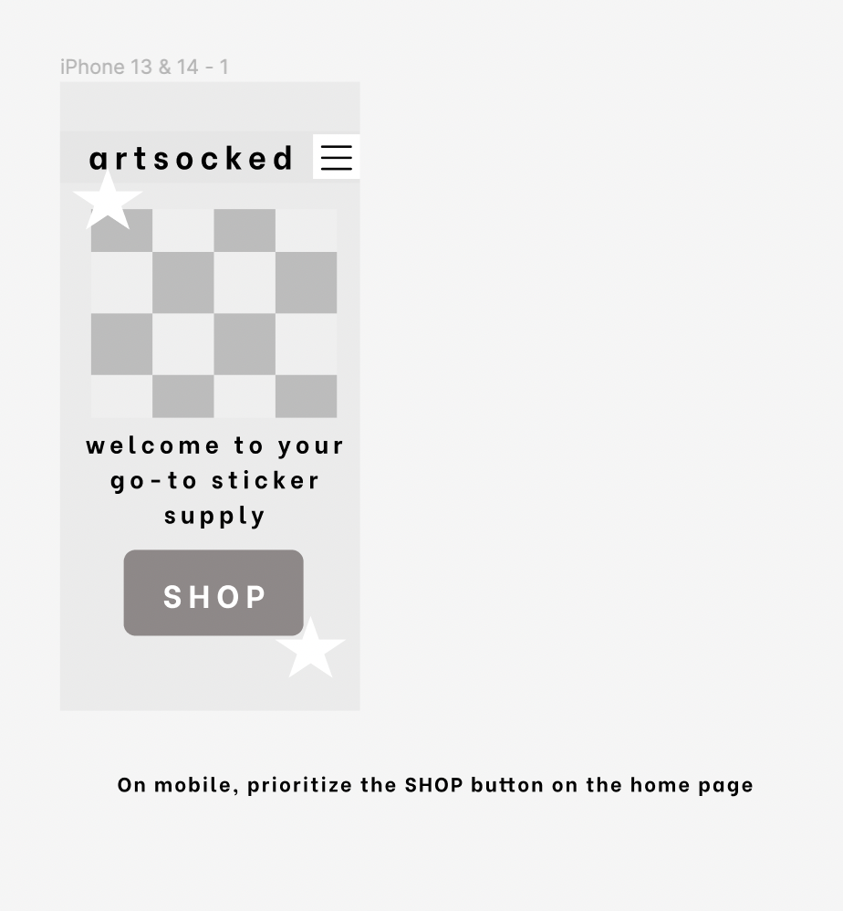
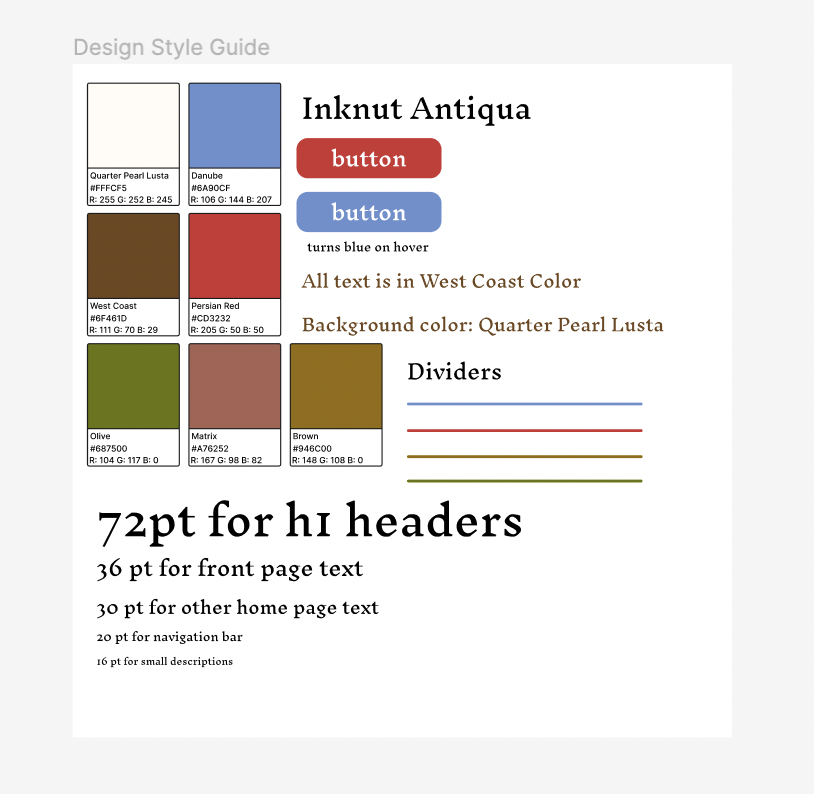
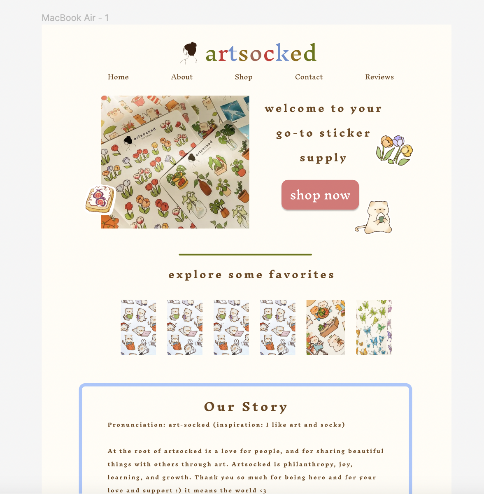
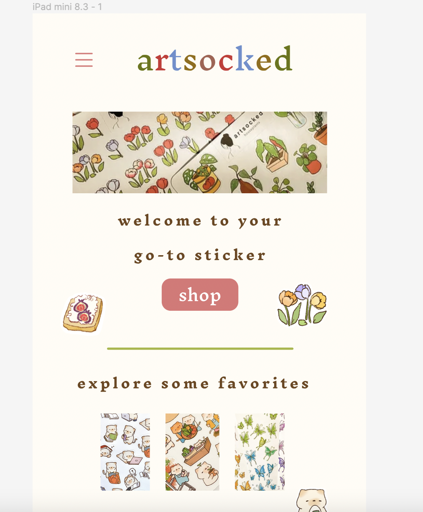
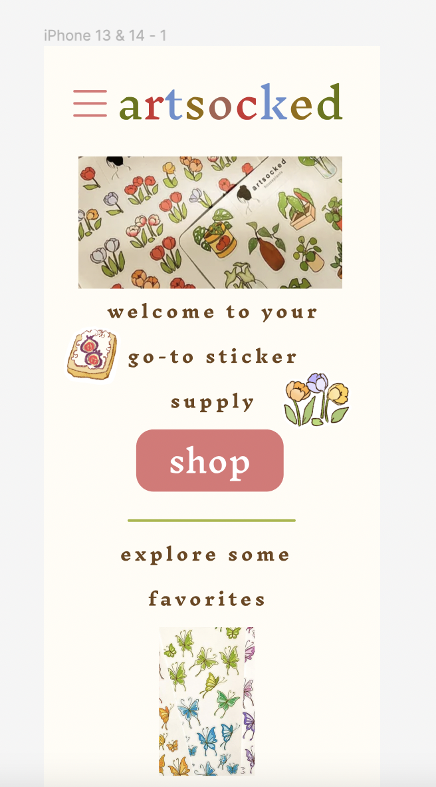

Website
Website: https://www.artsocked.com/
This is a simple, small business website for an online sticker shop. I chose this website because it’s a small business’s website, so there is probably not a UI/UX designer assigned to creating their digital media.
Observations & Problems
- The large home page image/div is disproportionally large compared to other items. Per Lecture 6: "Layout," it is important to create layouts/website structures that incorporate color and grouping to assist the user in understanding and accessing the website. When I squint my eyes, which 'blurs' the website, I can only make out the "Welcome to artsocked" heading and the large picture. The text of the navigation bar and the company title/purpose statement blends into the background or vanishes. Evaluating the layout of a website by blurring it was an exercise used in Lecture 6.
- The text on the homepage of this website loads in slowly, taking at least a couple of seconds. Moreover, some text doesn't load unless the user scrolls into the general area on that page where the text exists. This is not only frustrating to use, but also could cause issues with accessibility if users need to have all text present to comfortably and effectively use the website.
- Font size for the pages on the navigation bar are very small which make the pages difficult to find.
- The "shop now" button's font is also very small and low-weight, which makes the text difficult to see and understand. Moreover, on PC the button is located on the very bottom of the website due to the large height of the header, which further disrupts the layout as the button is not located in proximity/in the same central area on the front part of the home screen as the heading and most of the image
- The top left and right corners are crowded with information that also exists in very small font. Since there is high similarity between the name of the company, the purpose statement, and the page titles in the navigation bar, it is difficult to distinguish these elements.
- In conclusion, there are many ideas/statements on this home page but the lack of grouping and visual hierarchy disrupts the flow and communication of ideas
Accessibility
The following observations were detected with WebAIM Wave
- Multiple empty or nonexistant form labels for the "contact us" form
- Several low-contrast errors across the home page
- 20 alerts related to poor image alternative text labeling, redundant links, and very small text
Sketching
Above are my speed sketches
Above is the final sketch
Lo-Fi Mockup
Please visit the figma link for a comprehensive view of the lofi wireframes here
Lo-Fi mockup for PC
Lo-Fi mockup for tablet
Lo-Fi mockup for phone
The text loads in immediately on this website. Moreover, all small text from the original website are adjusted to have higher weight and greater font
Hi-Fi Mockup
Style Guide
Please visit the figma link for a comprehensive view of the lofi wireframes here
Hi-Fi mockup for PC
Hi-Fi mockup for tablet
Hi-Fi mockup for phone
Note: The PNG stickers scattered across the mock-ups are only a possibility and were not implemented in the final redesigned website due to time constraints and implementation complexity. However, it is completely possible to implement this and I hope to revisit this component in revisions to this project. It would be fun to be able to drag the sticker PNGs around the website, as one would do with real stickers to decorate surfaces.
Redesigned Website
Please visit the redesigned website here
Important Notes
- Following dimensions from the hi-fi Figma mockup, the redesigned website is not responsive at widths less than 390px as this is the width of the mobile website frame used
- Running WebAIM Wave on the redesigned website lead to no contrast errors, which largely improves on the original website that had many low-contrast errors. Moreover, the contact form is fully labeled, as well as the images. There are also no alerts for small text.
- The redesigned website is responsive to increasing font size in my browser (Google Chrome).
- I had difficulty increasing the size of the hamburger menu as it is too small for my liking and increasing its size would help in improving accessibility.
- In terms of aesthetics, I had to trade out the pastels of the original website for higher contrast colors. This decision will need to be evaluated by the company if this website is implemented as it is a major change in their appearance/style.
Conclusions
This project was greatly challenging for both my coding and design skills, but at the same time incredibly rewarding. Below are my major takeaways:
- Visual Hierarchy and Gestalt Principles are crucial for creating and establishing an organized and effective structure for a website and its information
- It is important to have multiple steps/layers in development, with different levels of complexity. Following the flow of creating sketches -> Lo-fi wireframes -> Hi-fi mockups before beginning to code the website saved me a lot of time and work in the long run as general designs were already developed so transitioning these design ideas to code was made as straightforward as possible.
- Accessibility design choices should be checked before website development. I did not check if my colors were high-contrast enough before developing the website, so I had to go back and find new colors and implement these afterward.
- Thinking ahead during the design process on how to use containers to store website components is a helpful strategy to further enhance the transition from design to code later on. This can be done in Figma by creating different frames for different containers.